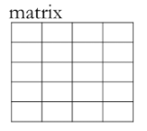
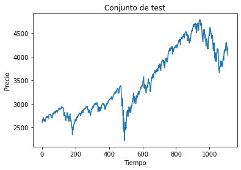
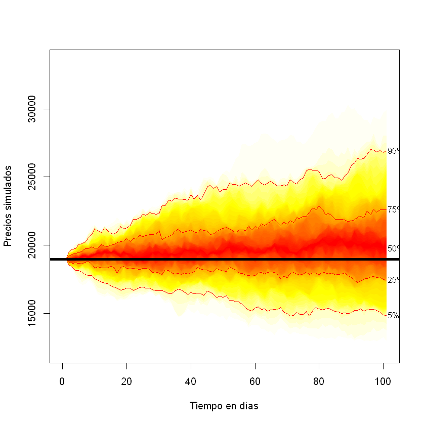
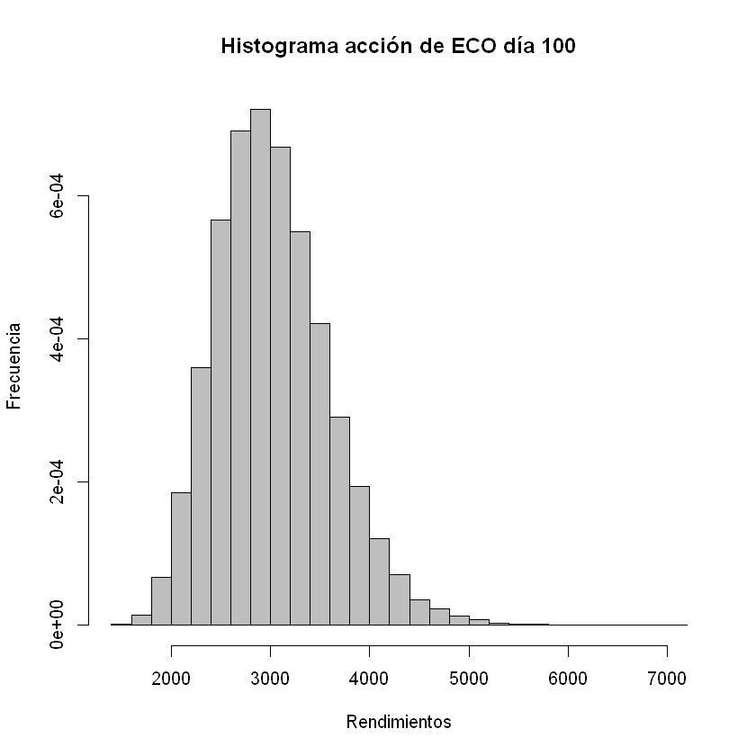
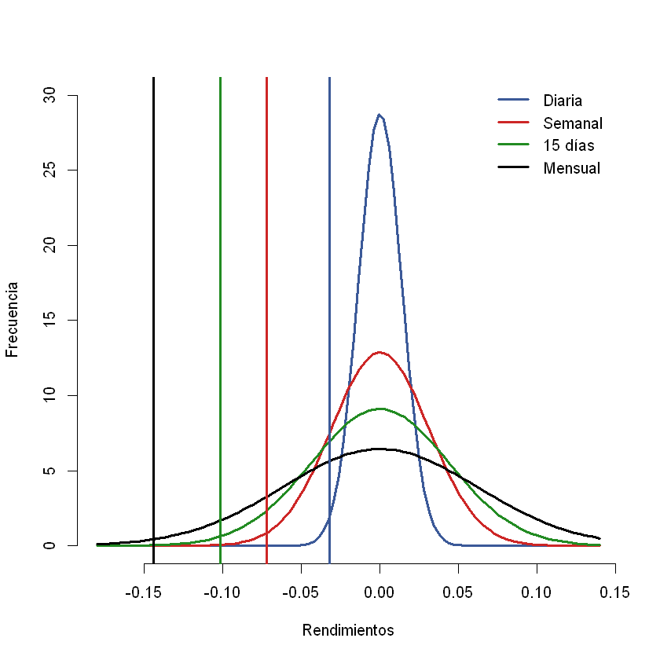

Método de simulación: Movimiento Browniano Geométrico (MBG)¶
Importar datos.¶
datos = read.csv("Tres acciones.csv", sep = ";")
Matriz de precios.¶
precios = datos[,-1]
Matriz de rendimientos.¶
rendimientos = matrix(, nrow(precios)-1, ncol(precios))
for(i in 1:ncol(precios)){
rendimientos[,i] = diff(log(precios[,i]))
}
Proporciones de inversión¶
proporciones = c(0.25, 0.40, 0.35)
Movimiento Browniano Geométrico (MBG)¶
Donde:
\(S_{t+\Delta t}:\) Precio simulado en el período \(t+\Delta t\).
\(S_t:\)Precio en el período \(t\).
\(\mu:\)Rendimiento esperado.
\(\sigma:\)Volatilidad.
\(\Delta t:\)Intervalo en el tiempo.
\(\epsilon:\)Variable aleatoria ~ N(0,1)
Para que se cumpla el supuesto de que los rendimientos se comportan como una distribución Normal, se necesita que \(\Delta t\) sea pequeño. Generalmente \(\Delta t=1\).
Una semana tiene cinco días bursátiles, un mes tiene 20 y un año 252.
Cuando la frecuencia de los rendimientos es diaria se usa \(\Delta t=1\).
Con rendimientos con frecuencias semanales se usa \(\Delta t=\frac{1}{5}\). Así cada salto en el tiempo será de un día.
Con rendimientos con frecuencias mensuales se usa \(\Delta t=\frac{1}{20}\). Así cada salto en el tiempo será de un día.
Con frecuencias anuales se usa \(\Delta t=\frac{1}{252}\). Así cada salto en el tiempo será de un día.
En el siguiente código, \(\Delta t\) estará representado por dt
y los días que se quieren simular con el MBG se representarán por n,
estos son la cantidad de saltos en el tiempo.
Si se tienen rendimientos diarios y se requiere trabajar con los precios simulados de un día,
dt=1yn=1, con precios simulados de una semana,dt=1yn=5, con precios simulados de un mes,dt=1yn=20.Si se tienen rendimientos semanales y se requiere trabajar con los precios simulados de un día,
dt=1/5yn=1, con precios simulados de una semana,dt=1/5yn=5, con precios simulados de un mes,dt=1/5yn=20.Si se tienen rendimientos mensuales y se requiere trabajar con los precios simulados de un día,
dt=1/20yn=1, con precios simulados de una semana,dt=1/20yn=5, con precios simulados de un mes,dt=1/20yn=20.
Datos iniciales de las acciones.¶
\(S_0:\)Precio actual de cada acción.¶
Este precio corresponde al valor de mercado de cada acción: Se utiliza
la función tail() que extrae los valores empezando en las últimas
filas, al indicar el valor de 1 solo extrae los precios de la última
fila. Se recomienda indicar que el vector s contiene valores
numéricos, esto se hace con as.numeric().
s = tail(precios,1)
s = as.numeric(s)
s
- 2980
- 41300
- 18960
\(\mu:\) Rendimiento esperado de cada acción¶
mu = apply(rendimientos, 2, mean)
mu
- 0.000142550355302127
- 0.000319532367160843
- 0.000353968507201265
\(\sigma:\)Volatilidad de cada acción¶
volatilidades = apply(rendimientos, 2, sd)
volatilidades
- 0.0186287123700029
- 0.0158377375241563
- 0.0155685912187815
\(\epsilon:\)Épsilon¶
Los valores aleatorios para la simulación Monte Carlo se generan con la
función rnorm(). Esta función devuelve la cantidad de valores
aleatorios que se indique dentro del paréntesis. Estos valores
aleatorios se distribuyen como una normal estándar (media igual a cero y
varianza igual a uno).
A continuación, se muestra un ejemplo con 15 valores aleatorios.
rnorm(15)
- -1.14581004194401
- 0.313593398339803
- -0.548076983176888
- 1.18626300724608
- 0.600154333112572
- 0.776025646118334
- 0.596837982610988
- 0.663931200014874
- -1.6141977772248
- 0.446245732768131
- 1.30657916009826
- 0.101655012005521
- 0.943840696921991
- -0.67954972873068
- 1.78865335286634
Simulación de 100 días con el MBG para cada acción independiente¶
Los intervalos en el tiempo serán diarios y los datos cargados tienen
una frecuencia diaria, por tanto, \(\Delta t=1\), dt=1. Se
realizarán 100 saltos hasta llegar al día 100, n=100.
Por cada acción se calcularán 50 escenarios para cada período, esto
significa que se realizarán 50 iteraciones por cada acción,
iteraciones=50. Estas iteraciones también son llamadas trazas.
n = 100
dt = 1
iteraciones = 50
ECO¶
Se hallará una matriz de precios simulados por el método MBG
st_ECO[i,j]. La primera columna de esta matriz tendrá el precio
actual de ECO que es 2980. La primera columna será el período
\(t=0\), es decir, esta primera columna no es simulada. Esto se hace
con st_ECO[,1]=s[1].

1¶
Se utilizan dos for. El primer for (for(i in 1:iteraciones))
que contiene i indicará las filas de la matriz de los precios
simulados. Cada fila representará una iteración o también llamada traza,
entonces tendrá 50 filas. El segundo for (for(j in 2:(n+1)))
indicará las columnas que representarán el precio en un período en el
tiempo, la matriz tendrá 101 columnas, la primera columna contiene el
precio actual de la acción y 100 adicionales que serán los precios
simulados. Se tendrán n+1 columnas.
Para calcular Épsilon se utilizará la función rnorm() que tendrá
entre paréntesis el valor de 1 que indica que arrojará un solo valor
aleatorio N(0,1), aparecerá un valor aleatorio por cada precio simulado,
cada valor aleatorio será independendiente de los otros, por esto
aparece como rnorm(1).
Como se está simulando los precios de la acción de ECO que corresponde a
la primera columna de las acciones cargadas, los datos están en la
ubicación [1]. Por esto se tiene:
s[1],mu[1],volatilidades[1].
st_ECO = matrix(, iteraciones, n+1)
st_ECO[,1] = s[1]
for(i in 1:iteraciones){
for(j in 2:(n+1)){
st_ECO[i,j] = st_ECO[i,j-1]*exp((mu[1]-volatilidades[1]^2/2)*dt+volatilidades[1]*sqrt(dt)*rnorm(1))
}
}
Gráfica de los precios simulados de ECO con el paquete fanplot.¶
Este paquete se debe instalar con install.packages("fanplot").
library(fanplot)
fan0(st_ECO, ln = c(5,25,50,75,95), xlim = c(0, n+1), ylim = c(min(st_ECO), max(st_ECO)), xlab = "Tiempo en días", ylab = "Precios simulados")
abline( h = s[1], lwd = 4)
Warning message:
"package 'fanplot' was built under R version 3.6.3"

PFBCOLOM¶
Para la acción PFBCOLOM se utiliza
s[2],mu[2],volatilidades[2] porque esta acción está en
la segunda columna de los datos cargados.
st_PFB = matrix(, iteraciones, n+1)
st_PFB[,1] = s[2]
for(i in 1:iteraciones){
for(j in 2:(n+1)){
st_PFB[i,j] = st_PFB[i,j-1]*exp((mu[2]-volatilidades[2]^2/2)*dt+volatilidades[2]*sqrt(dt)*rnorm(1))
}
}

Gráfica de los precios simulados de PFBCOLOM con el paquete fanplot.¶
fan0(st_PFB, ln = c(5,25,50,75,95), xlim = c(0, n+1), ylim =c (min(st_PFB), max(st_PFB)), xlab = "Tiempo en días", ylab = "Precios simulados")
abline(h = s[2], lwd = 4)

ISA¶
Para la acción ISA se utiliza
s[3],mu[3],volatilidades[3] porque esta acción está en
la tercera columna de los datos cargados.
st_ISA = matrix(, iteraciones, n+1)
st_ISA[,1] = s[3]
for(i in 1:iteraciones){
for(j in 2:(n+1)){
st_ISA[i,j] = st_ISA[i,j-1]*exp((mu[3]-volatilidades[3]^2/2)*dt+volatilidades[3]*sqrt(dt)*rnorm(1))
}
}

{kind=link}
{kind=link}
Gráfica de los precios simulados de ISA con el paquete fanplot.¶
fan0(st_ISA,ln = c(5,25,50,75,95), xlim = c(0, n+1), ylim = c(min(st_ISA), max(st_ISA)), xlab = "Tiempo en días", ylab = "Precios simulados")
abline(h = s[3], lwd = 4)
{kind=link}

Simulación de procesos correlacionados¶
Al conformar un portafolio de inversión, la simulación de cada acción no se puede hacerse de forma independiente como se realizó anteriormente, se debe hacer una simulación teniendo en cuenta los coeficientes de correlación que existe entre los rendimientos de las acciones. En otras palabras, se debe realizar una simulación de procesos correlacionados. Los valores aleatorios de cada acción seguirán teniendo la distribución N(0,1), pero estarán correlacionados con las demás acciones.
La descomposición o factorización de Cholesky sirve para simular procesos correlacionados. Se aplica la factorización de Cholesky a la matriz de coeficientes de correlación para que los valores aleatorios estén correlacionados.
Con este método se busca que con la multiplicación de una matriz por su transpuesta, el resultado es la matriz de correlaciones entre los activos.
El vector de valores aleatorio correlacionados \(K\) es hallado multiplicando la matriz \(A\) por el vector de valores aleatorio incorrelacionados \(Y\). De esta forma, los valores aleatorios incorrelacionados \(Y\) son transformados en valores aleatorios correlacionados \(K\):
Para obtener valores aleatorios correlacionados se usará:
cholesky=chol(correlacion).
Matríz de coeficientes de correlación¶
correlacion = cor(rendimientos)
correlacion
| 1.0000000 | 0.3602051 | 0.3218894 |
| 0.3602051 | 1.0000000 | 0.3299546 |
| 0.3218894 | 0.3299546 | 1.0000000 |
El coeficiente de correlación entre ECO y PFB es de 0.3602051, entre ECO e ISA es de 0.3218894 y entre PFB e ISA es de 0.3299546.
La simulación de estas tres acciones debe realizarse teniendo en cuenta estos coeficientes de correlación porque las tres acciones conformarán un portafolio de inversión.
Descomposición de Cholesky¶
cholesky = chol(correlacion)
cholesky
| 1 | 0.3602051 | 0.3218894 |
| 0 | 0.9328731 | 0.2294079 |
| 0 | 0.0000000 | 0.9185637 |
Simulación de los precios de las acciones como un proceso correlacionado.¶
Con rnorm(ncol(precios)) se está generando valores aleatorios tantas
acciones se tenga. Estos valores aleatorios se guardan en un objeto
llamado aleatorio. Luego, estos valores aleatorios no están
correlacionados, cada uno es independiente de los otros, para obtener
valores aleatorios correlacionados, se debe multiplicar la matriz
hallada con Cholesky por el vector de los valores aleatorios. De esta
manera, se obtiene valores aleatorios correlacionados alojados en el
objeto llamado aleatorio_corr. Lo anterior se muestra en el
siguiente código:
aleatorio=rnorm(ncol(precios)) aleatorio_corr=colSums(aleatorio*cholesky)
Se realizará la simulación del precio de cada acción para 100 días con
intervalos de tiempo diario. Se creará un array donde la primera
matriz tendrá los valores de la acción de ECO, la segunda matriz los
valores de PFBCOLOM y la tercera los valores de ISA. El array
guardará estas tres matrices en un solo objeto. Los array tienen
tres dimensiones, la primera indica la fila, la segunda la columna y la
tercera la matriz: [fila,columna,matriz].

2¶
En el array, las filas de cada matriz serán las iteraciones, las
columnas los intervalos de tiempo. En la primera columna de cada matriz
del array se pegarán los precios actuales de cada acción, se hará de
la siguiente manera:
for(i in 1:ncol(rendimientos)){
st[,1,i]=s[i]
}
dt = 1
n = 100
iteraciones = 50000
st = array(dim = c(iteraciones, n+1, ncol(rendimientos)))
for(i in 1:ncol(rendimientos)){
st[,1,i] = s[i] # Con este for se está almacenando el precio actual de cada acción en la columna 1 de las matrices del array.
}
aleatorio_corr = vector()
for(k in 1:ncol(precios)){
for(i in 1:iteraciones){
for(j in 2:(n+1)){
aleatorio = rnorm(ncol(precios))
aleatorio_corr = colSums(aleatorio*cholesky)
st[i,j,k] = st[i,j-1,k]*exp((mu[k]-volatilidades[k]^2/2)*dt+volatilidades[k]*sqrt(dt)*aleatorio_corr[k])
}
}
}
Distribución precios simulados de ECO día 1¶
hist(st[,2,1], col = "gray", breaks = 40, xlab = "Rendimientos", ylab = "Frecuencia", main = "Histograma acción de ECO día 1", freq = F)

Distribución precios simulados de ECO día 100¶
hist(st[,n+1,1], col = "gray", breaks = 40, xlab = "Rendimientos", ylab = "Frecuencia", main = "Histograma acción de ECO día 100", freq = F)
{kind=link}

Distribuciones precios simulados de ECO¶
hist(st[,n+1,1], col = "white", border = "white", breaks = 40, xlab = "Rendimientos", ylab = "Frecuencia", main = "", freq = F, ylim = c(0,0.007))
lines(density(st[,2,1]), col = "gray55", lwd = 2)
lines(density(st[,5,1]), col = "darkgreen", lwd = 2)
lines(density(st[,21,1]), col = "darkblue", lwd = 3)
lines(density(st[,81,1]), col = "red", lwd = 3)
lines(density(st[,n+1,1]), lwd = 3)
legend(x = "topright", c("1 día","5 días","20 días","80 días","100 días"), col = c("gray55","darkgreen","darkblue","brown","black"), lwd = c(2,2,3,3,3), bty = "n")
{kind=link}
